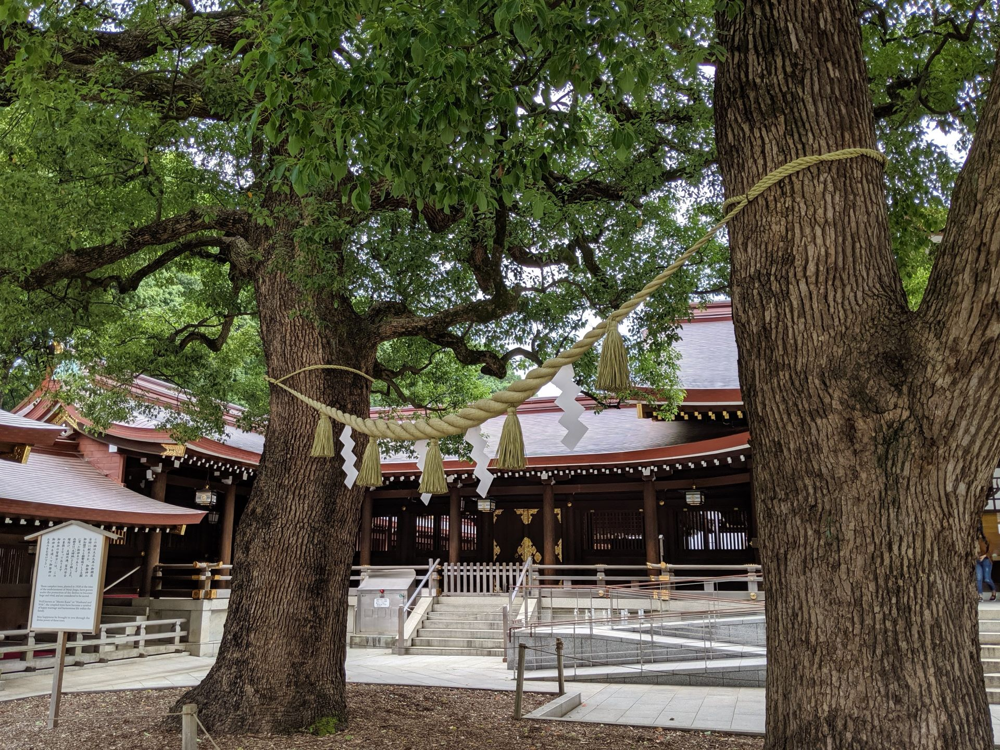
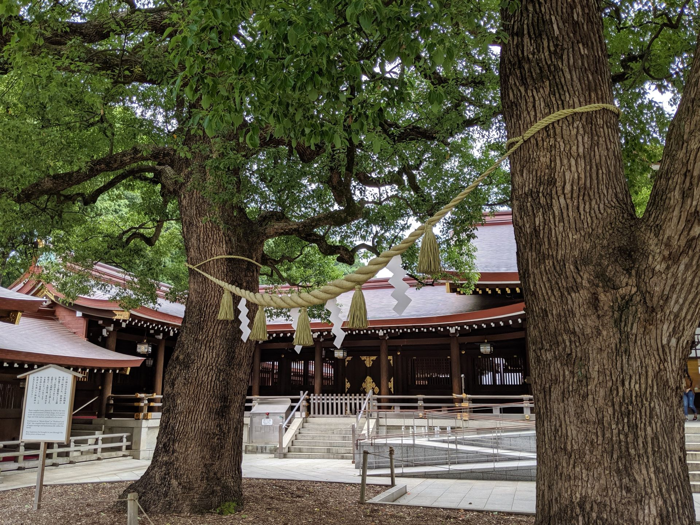

Photo de droite: meiji-jingu.jpg (URL: https://fr.wikipedia.org/wiki/Meiji-jing%C5%AB )

Photo de droite: meiji-jingu.jpg (URL: https://fr.wikipedia.org/wiki/Meiji-jing%C5%AB )
Harajuku (原宿) est un sous-quartier faisant partie du quartier de Jingumae, dans l'arrondissement de Shibuya à Tokyo.
Ce quartier est fréquenté par un grand nombre de jeunes qui profitent du week-end, durant lequel ils n'ont pas l'obligation de porter l'habituel uniforme, pour se distinguer par leur style vestimentaire. On y voit généralement des adeptes de la mode Lolita, des jeunes gens habillés en chanteur de rock ou en visual kei, et, des cosplayers déguisés en personnage de manga, d'anime ou de jeux vidéo. De célèbres groupes de visual kei approvisionnent leurs garde-robes à Harajuku, tels que X Japan, Dir en Grey, AnCafe, etc. Ces modes vestimentaires sont ensuite reprises par les adolescents.
La rue Takeshita-dōri (voir photo de gauche) concentre un grand nombre de boutiques qui habillent entre autres les Gothic Lolita, les Cosplay, les Pink, les Sweet Lolita.
Le quartier de Harajuku est aussi connu pour abriter l'un des plus célèbres sanctuaires shintoïste, le Meiji-jingū
(voir photo de droite), au milieu du Parc Yoyogi, une forêt artificielle plantée vers 1920. Le Meiji-jingū (明治神宮) ou
sanctuaire Meiji, est un sanctuaire shintoïste situé en plein cœur de Tokyo, dans l'arrondissement de Shibuya, en
bordure du quartier Harajuku.
C'est le plus grand lieu de culte shintoïste du pays, où l'on célèbre de nombreux mariages et cérémonies.
Pour plus de détails: